The main impact of oil at $200 a barrel on India would be a large drop in GDP of 4.79% by Q13. Equities peak at -12.42% in Q13.
Demand and trade. Consumption peaks at -2.90 % vs baseline in Q14, from -0.89 in Q1 to -2.11 in Q20. Investment peaks at -13.09 % vs baseline in Q9, from -5.69 in Q1 to -4.61 in Q20. Net Exports peaks at -4.79 % vs baseline in Q4, from -3.02 in Q1 to -1.49 in Q20. Gov Spending peaks at +0.81 % vs baseline in Q13, from +0.29 in Q1 to +0.54 in Q20. Gov Debt peaks at -8.95 % vs baseline in Q20, from -0.25 in Q1 to -8.95 in Q20.
External / FX. The real exchange rate shows real depreciation (a weaker, more competitive home currency). Currency Strength peaks at +5.29 % vs baseline in Q17, from +0.41 in Q1 to +5.07 in Q20.
Labour. Employment peaks at -4.22 % vs baseline in Q19, from -0.20 in Q1 to -4.21 in Q20. Unemployment peaks at +0.33 pp in Q14, from +0.05 in Q1 to +0.26 in Q20. Real Wages peaks at -6.47 % vs baseline in Q20, from -0.03 in Q1 to -6.47 in Q20.
Prices. The three-year CPI impulse is +2.61 percentage points. CPI Inflation peaks at +0.57 pp in Q3, from +0.32 in Q1 to -0.48 in Q20. Domestic Infl. peaks at +0.40 pp in Q3, from +0.22 in Q1 to -0.33 in Q20. Marginal Cost peaks at -2.84 % vs baseline in Q13, from -1.02 in Q1 to -1.90 in Q20.
Financial conditions. Policy Rate peaks at -2.65 pp (annualized) in Q20, from +0.63 in Q1 to -2.65 in Q20. Govt 2Y Yield peaks at -2.61 pp (annualized) in Q19, from +1.80 in Q1 to -2.59 in Q20. Govt 5Y Yield peaks at -2.29 pp (annualized) in Q15, from -0.00 in Q1 to -2.10 in Q20. Govt 10Y Yield peaks at -1.66 pp (annualized) in Q13, from -1.01 in Q1 to -1.41 in Q20. Bond Price peaks at +13.25 % vs baseline in Q20, from -3.14 in Q1 to +13.25 in Q20. Equity Index peaks at -12.42 % vs baseline in Q13, from -4.83 in Q1 to -7.53 in Q20. Tobin's Q peaks at -9.16 % vs baseline in Q9, from -3.98 in Q1 to -3.22 in Q20. House Prices peaks at -6.29 % vs baseline in Q19, from -0.28 in Q1 to -6.28 in Q20. Bank Credit peaks at -0.80 % vs baseline in Q16, from -0.07 in Q1 to -0.78 in Q20. Credit Spread peaks at +0.02 pp in Q16, from +0.00 in Q1 to +0.02 in Q20.
Sectoral and capital. Manuf. GDP peaks at -4.21 % vs baseline in Q13, from -2.03 in Q1 to -3.39 in Q20. Services GDP peaks at -2.64 % vs baseline in Q13, from -0.97 in Q1 to -1.77 in Q20. Capital Stock peaks at -1.03 % vs baseline in Q20, from -0.03 in Q1 to -1.03 in Q20.
Timing. By Q20 GDP is still -3.21% from baseline.
These figures are model IRFs versus baseline, not forecasts.
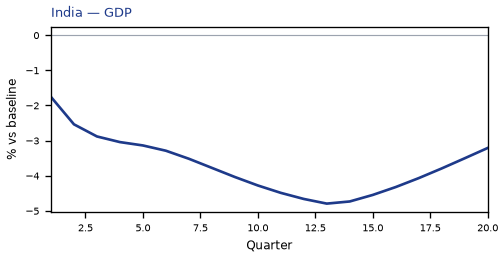
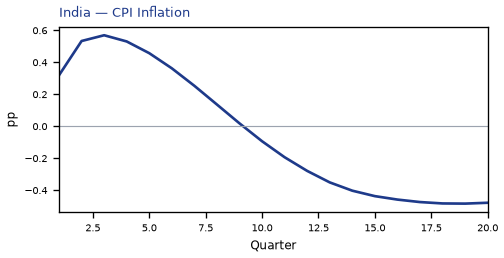
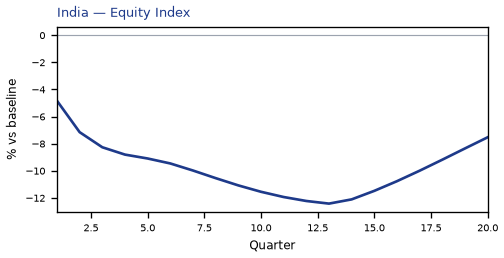
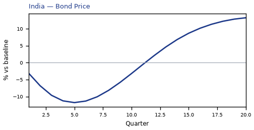
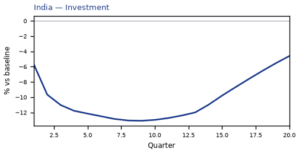
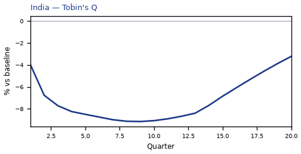
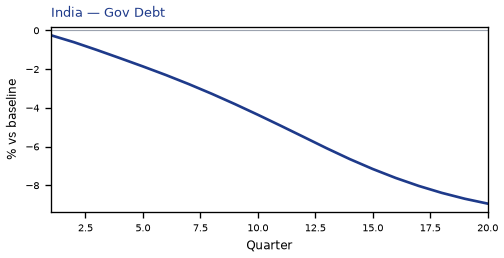
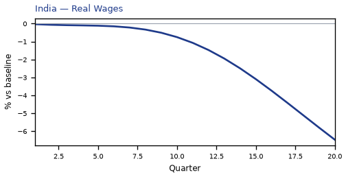
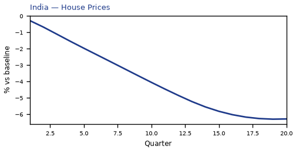
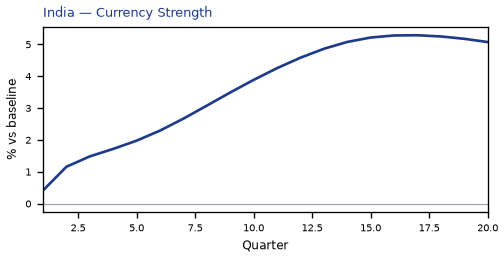
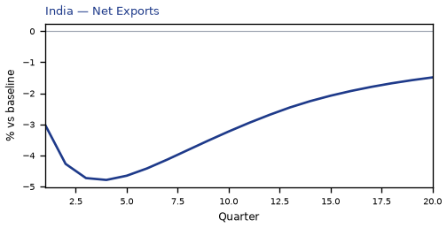
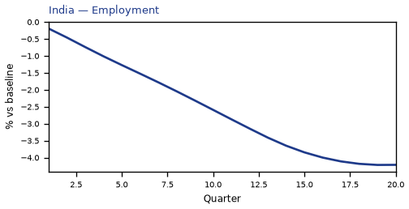
source=live · global_macro_v5 · contract v6 · Q1–Q20 JSON · not financial advice